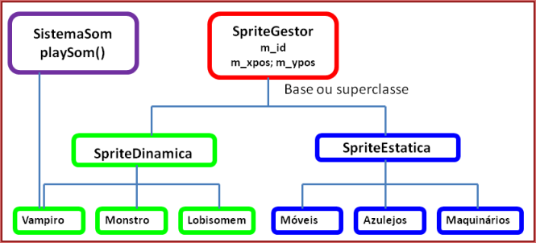
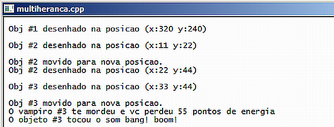

Curso completo de linguagem C++
Gameprog - Escola de programação de jogos digitais
Contato: gameprog.br@gmail.com
track14.html
14.Classes 5/5 - Herança múltipla
14.1 Visão geral

Com o desenho acima ilustramos um típico caso de herança múltipla de um
jogo 2D. No jogo acima, temos uma superclasse ( SpriteGestor ) para gerenciar
todas as sprites do jogo. Sprite é um desenho 2D que geralmente serve de célula
de animação e de elemento decorativo para um jogo 2D.
A classe SpriteGestor vai apresentar propriedades e métodos que devem ser
gerais a todas as sprites como posição, identificação e método desenhar()
por exemplo.
Na sequência derivamos a classe SpriteDinamica que vai representar os objetos
que se movem no jogo como o próprio jogador e seus inimigos que se movem por
conta própria. A classe SpriteDinâmica vai prover os métodos e as
propriedades para deslocamento desses objetos na tela.
Na sequência vamos incorrer na questão da herança múltipla. Da classe
SpriteDinâmica vamos ainda derivar classes de monstros, vampiros e lobisomens.
Com estas classes implementadas vai ser fácil populacionar o jogo com esses
objetos monstruosos que se movem por conta própria. Estes objetos para eles
terem mais vida durante o jogo eles devem fazer barulho, e isso eles conseguem
através da herança múltipla, herdando os métodos da classe SistemaSom. Em
nossa ilustração acima, por questão de simplificação, mostramos apenas o
Vampiro sonorizado.
Em termos de sintaxe c++, a declaração da nossa classe Vampiro é feito dessa
forma: class Vampiro: public SpriteDinamica, public SistemaSom { // código }
Lembrando que a classe SpriteDinamica já estaria derivada de SpriteGestor:
class SpriteDinamica: public SpriteGestor { // código da classe }
Voltando a superclasse, vamos derivar dela a classe SpriteEstática que vai
fornecer o suporte para as sprites que vão compor o cenário do jogo. Dessa
classe vamos derivar as classes Móveis, Máquinarios e Azulejos das quais
vamos instanciar objetos para compor nosso cenário. Estes objetos serão
decorativos e não se movimentarão por conta própria.
Veja nosso programa exemplo:

// multiheranca.cpp
// Este programa ilustra o uso herança múltipla
#include <iostream>
using namespace std;
// ------------------------- classe SistemaSom --------------------------
class SistemaSom {
public:
// Metodo playSom()
void playSom(int nid = 0) {
if (nid != 0) cout << " O objeto #" << nid << " tocou o som ";
cout << "bang! boom! \n";
} // fim do metodo: playSom()
}; // fim da classe: SistemaSom
// **************************************************************************
// ------------------------- classe SpriteGestor --------------------------
class SpriteGestor {
public:
int m_id;
int m_xpos;
int m_ypos;
static int autonumerador;
// construtor da classe
SpriteGestor(int x=0, int y=0): m_xpos(x), m_ypos(y)
{
m_id = autonumerador;
autonumerador++;
}
void desenhar()
{
char txt[40];
sprintf(txt, " Obj #%d desenhado na posicao (x:%d y:%d)", m_id, m_xpos, m_ypos);
cout << txt << "\n\n";
} // fim do método: desenhar()
}; // fim da classe SpriteGestor
int SpriteGestor::autonumerador = 1;
// **************************************************************************
// ------------------------- classe SpriteDinamica --------------------------
class SpriteDinamica: public SpriteGestor {
public:
SpriteDinamica(int x=11, int y=22): SpriteGestor(x,y) {}
void mover (int dx, int dy)
{
m_xpos = m_xpos + dx;
m_ypos = m_ypos + dy;
cout << " Obj #" << m_id << " movido para nova posicao.\n";
}
}; // fim da classe: SpriteGestor
// **************************************************************************
// ------------------------- classe Vampiro --------------------------
class Vampiro: public SpriteDinamica, public SistemaSom {
public:
int m_estrago;
Vampiro (int x=33, int y=44): SpriteDinamica(x,y) { m_estrago = 55;}
void morder()
{
cout << " O vampiro #" << m_id << " te mordeu e vc perdeu ";
cout << m_estrago << " pontos de energia \n";
}
}; // fim da classe Vampiro
// **************************************************************************
// ------------------------- Início do programa: main() ----------------------
int main() {
system("color f0"); system("title multiheranca.cpp"); cout << endl;
// Objeto base 1) SpriteGestor
// Apenas pode desenhar-se
SpriteGestor sprt01(320,240);
// 1) SpriteGestor 2) SpriteDinamica
// Pode desenhar-se e mover-se
SpriteDinamica sprt02;
// 1) SpriteGestor 2) SpriteDinamica 3) Vampiro 4) SistemaSom
// dracula vai poder desenhar-se(SpriteGestor), mover-se(SpriteDinamica)
// morder(Vampiro) e tocar som(SistemaSom)
Vampiro dracula;
sprt01.desenhar();
sprt02.desenhar();
sprt02.mover(11,22);
sprt02.desenhar();
dracula.desenhar();
dracula.mover(1,1);
dracula.morder();
dracula.playSom(dracula.m_id);
cout << endl; system("pause");
} // fim da função: main()